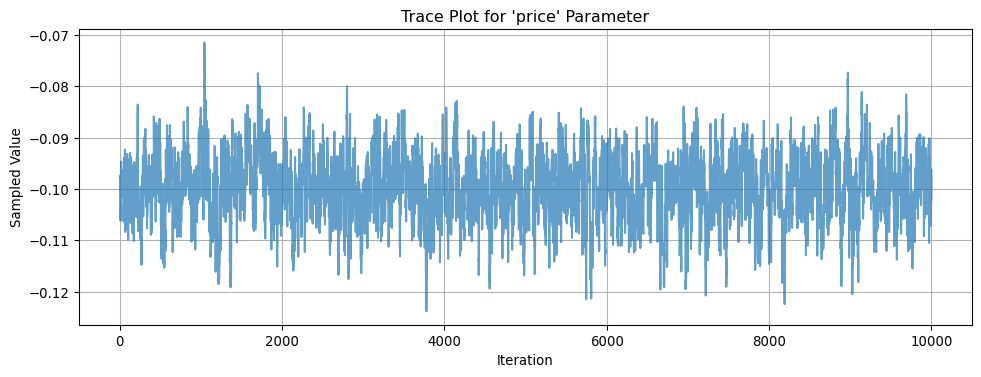
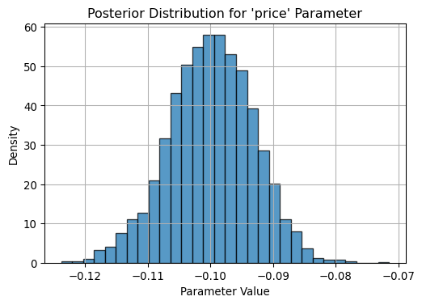

This assignment expores two methods for estimating the MNL model: (1) via Maximum Likelihood, and (2) via a Bayesian approach using a Metropolis-Hastings MCMC algorithm.
1. Likelihood for the Multi-nomial Logit (MNL) Model
Suppose we have \(i=1,\ldots,n\) consumers who each select exactly one product \(j\) from a set of \(J\) products. The outcome variable is the identity of the product chosen \(y_i \in \{1, \ldots, J\}\) or equivalently a vector of \(J-1\) zeros and \(1\) one, where the \(1\) indicates the selected product. For example, if the third product was chosen out of 3 products, then either \(y=3\) or \(y=(0,0,1)\) depending on how we want to represent it. Suppose also that we have a vector of data on each product \(x_j\) (eg, brand, price, etc.).
We model the consumer’s decision as the selection of the product that provides the most utility, and we’ll specify the utility function as a linear function of the product characteristics:
\[ U_{ij} = x_j'\beta + \epsilon_{ij} \]
where \(\epsilon_{ij}\) is an i.i.d. extreme value error term.
The choice of the i.i.d. extreme value error term leads to a closed-form expression for the probability that consumer \(i\) chooses product \(j\):
A clever way to write the individual likelihood function for consumer \(i\) is the product of the \(J\) probabilities, each raised to the power of an indicator variable (\(\delta_{ij}\)) that indicates the chosen product:
We will simulate data from a conjoint experiment about video content streaming services. We elect to simulate 100 respondents, each completing 10 choice tasks, where they choose from three alternatives per task. For simplicity, there is not a “no choice” option; each simulated respondent must select one of the 3 alternatives.
Each alternative is a hypothetical streaming offer consistent of three attributes: (1) brand is either Netflix, Amazon Prime, or Hulu; (2) ads can either be part of the experience, or it can be ad-free, and (3) price per month ranges from $4 to $32 in increments of $4.
The part-worths (ie, preference weights or beta parameters) for the attribute levels will be 1.0 for Netflix, 0.5 for Amazon Prime (with 0 for Hulu as the reference brand); -0.8 for included adverstisements (0 for ad-free); and -0.1*price so that utility to consumer \(i\) for hypothethical streaming service \(j\) is
where the variables are binary indicators and \(\varepsilon\) is Type 1 Extreme Value (ie, Gumble) distributed.
The following code provides the simulation of the conjoint data.
3. Preparing the Data for Estimation
The “hard part” of the MNL likelihood function is organizing the data, as we need to keep track of 3 dimensions (consumer \(i\), covariate \(k\), and product \(j\)) instead of the typical 2 dimensions for cross-sectional regression models (consumer \(i\) and covariate \(k\)). The fact that each task for each respondent has the same number of alternatives (3) helps. In addition, we need to convert the categorical variables for brand and ads into binary variables.
import pandas as pdimport statsmodels.api as sm# Load the dataset from correct pathdf = pd.read_csv("other_docs/conjoint_data.csv")# Convert categorical variables into binary indicators (drop one level to avoid multicollinearity)df = pd.get_dummies(df, columns=['brand', 'ad'], drop_first=True)# Create a unique identifier for each choice task per respondentdf['choice_set'] = df['resp'].astype(str) +"_"+ df['task'].astype(str)# Define predictors (exclude identifiers and choice)X_cols = [col for col in df.columns if col notin ['resp', 'task', 'choice', 'choice_set']]# Ensure all predictors are numericX = df[X_cols].apply(pd.to_numeric)# Add interceptX = sm.add_constant(X)# Ensure y is numeric and cleany = pd.to_numeric(df['choice'])import statsmodels.api as sm# Convert X and y to proper float formatX_float = X.astype(float)y_float = y.astype(float)# Fit simple binary Logit modellogit_model = sm.Logit(y_float, X_float)logit_result = logit_model.fit()# Print resultsprint(logit_result.summary())
The logistic regression model predicts the probability that a subscription option is chosen based on its attributes: price, brand, and whether it includes ads. The key outputs include:
Pseudo R² = 0.1123: This indicates a modest but meaningful improvement over a model with no predictors, which is typical in discrete choice models.
Log-Likelihood = -1695.0, compared to -1909.5 for the null model. The large improvement and a highly significant likelihood ratio test (p < 0.001) confirm that the model fits the data well.
The model converged successfully in 6 iterations.
üîç Coefficient Interpretation
Variable
Coefficient
95% CI
Interpretation
Intercept
0.8818
[0.623, 1.141]
Baseline utility when all variables are zero. Not directly interpretable but included in the model.
price
-0.0901
[-0.101, -0.079]
A unit increase in price decreases the log-odds of being chosen. This confirms that consumers are price-sensitive.
brand_N
0.8935
[0.688, 1.099]
Netflix increases utility relative to the base brand (e.g., Hulu or a generic option). Netflix is strongly preferred.
brand_P
0.4859
[0.278, 0.694]
Prime is also preferred to the base brand, but less so than Netflix.
ad_Yes
-0.7489
[-0.915, -0.583]
Ad-supported plans are significantly less preferred. Consumers value ad-free experiences.
ü߆ Takeaways
Netflix is the most preferred brand, followed by Prime.
Price and ads reduce the likelihood of selection, both with strong statistical significance.
All predictors are highly significant (p < 0.001), and their confidence intervals do not include zero.
4. Estimation via Maximum Likelihood
Before estimating the parameters of our multinomial logit model, we first need to define the model’s likelihood function. In the context of discrete choice modeling, the likelihood captures the probability that each respondent chooses the alternative they actually selected, given a vector of parameters. We will implement this using the negative log-likelihood formulation, which is more numerically stable and compatible with optimization routines. The following function calculates the negative log-likelihood for our MNL model, accounting for grouped choice sets across individuals and tasks.
def mnl_log_likelihood(beta, X, y, choice_set_ids): beta = np.asarray(beta, dtype=np.float64) X = np.asarray(X, dtype=np.float64)# Compute utilities V = X @ beta# Safely exponentiate utilities expV = np.exp(V)# Initialize denominators denom = np.zeros_like(V)# Compute denominator per choice setfor cs in np.unique(choice_set_ids): mask = choice_set_ids == cs denom[mask] = np.sum(expV[mask])# Probabilities prob = expV / denom# Likelihood for chosen alternatives only log_likelihood = np.sum(np.log(prob[y ==1]))return-log_likelihood
To estimate the parameters of the multinomial logit model, we use the method of Maximum Likelihood Estimation (MLE). This approach finds the set of parameter values that maximize the likelihood of observing the choices made by individuals in the dataset. The following code loads and prepares the data, defines a numerically stable log-likelihood function using the log-sum-exp trick, and then uses the scipy.optimize.minimize function with the BFGS algorithm to estimate the model parameters. Finally, it prints the estimated coefficients and the final value of the negative log-likelihood.
import pandas as pdimport numpy as npfrom scipy.optimize import minimizefrom scipy.special import logsumexp# Load and prepare the datadf = pd.read_csv("other_docs/conjoint_data.csv") # Adjust path if neededdf = pd.get_dummies(df, columns=['brand', 'ad'], drop_first=True)df['choice_set'] = df['resp'].astype(str) +"_"+ df['task'].astype(str)df['choice_set_id'] = df['choice_set'].astype('category').cat.codes# Define feature matrix X and outcome yX_cols = ['price'] + [col for col in df.columns if col.startswith('brand_') or col.startswith('ad_')]X = df[X_cols].values.astype(float)y = df['choice'].values.astype(float)choice_set_ids = df['choice_set_id'].values# Define stable log-likelihood function using log-sum-expdef mnl_log_likelihood(beta, X, y, choice_set_ids): V = X @ beta log_likelihood =0.0for cs in np.unique(choice_set_ids): mask = choice_set_ids == cs V_cs = V[mask] y_cs = y[mask] log_prob_cs = V_cs - logsumexp(V_cs) log_likelihood += log_prob_cs[y_cs ==1].sum()return-log_likelihood # return negative for minimization# Run MLE optimizationinitial_beta = np.zeros(X.shape[1])result = minimize( mnl_log_likelihood, initial_beta, args=(X, y, choice_set_ids), method='BFGS')# Print resultsprint("Estimated beta coefficients:")print(result.x)print("\nOptimization success:", result.success)print("Final negative log-likelihood:", result.fun)
The following results reflect an attempt to estimate the multinomial logit model parameters using Maximum Likelihood Estimation (MLE). However, the optimizer did not converge successfully, so caution should be used when interpreting these results.
üìâ Optimization Output
Estimated beta coefficients:
price: -0.0995
brand_N: 0.9412
brand_P: 0.5016
ad_Yes: -0.7320
Final negative log-likelihood: 879.86
Optimization success: False — the optimizer failed to reach a solution that satisfies the convergence criteria.
⚠️ Interpretation Caveats
While the estimated coefficients appear reasonable and consistent with theory: - price is negative (as expected), - Netflix (brand_N) and Prime (brand_P) have positive effects, - and ads reduce utility,
…the fact that optimization did not converge means that these estimates may not be at a true likelihood maximum. This could result from: - A poorly scaled problem or starting point, - Flat regions in the likelihood surface, - Numerical instability (e.g., large or imbalanced covariates).
✅ Recommendation
Try improving model specification, rescaling variables, or using a different optimizer (e.g., trust-constr, Newton-CG).
Verify the implementation of your log-likelihood function.
Alternatively, use Bayesian methods (e.g., MCMC) to explore the posterior when MLE is unreliable.
In this section, we use the Maximum Likelihood Estimation (MLE) approach to estimate the four parameters of the multinomial logit model: \(\beta_\text{netflix}\), \(\beta_\text{prime}\), \(\beta_\text{ads}\), and \(\beta_\text{price}\). After defining the log-likelihood function, we use scipy.optimize.minimize with the BFGS optimization method to find the parameter values that maximize the likelihood. We then extract the inverse Hessian from the optimization result to calculate standard errors and construct 95% confidence intervals for each coefficient. The resulting summary table reports the point estimates and associated uncertainty.
import pandas as pdimport numpy as npfrom scipy.optimize import minimize# Load and prep datadf = pd.read_csv("other_docs/conjoint_data.csv") # adjust path as neededdf = pd.get_dummies(df, columns=['brand', 'ad'], drop_first=True)df['choice_set'] = df['resp'].astype(str) +"_"+ df['task'].astype(str)df['choice_set_id'] = df['choice_set'].astype('category').cat.codes# Create X, y, choice_set_idsX_cols = ['price'] + [col for col in df.columns if col.startswith('brand_') or col.startswith('ad_')]X = df[X_cols].values.astype(float)y = df['choice'].values.astype(float)choice_set_ids = df['choice_set_id'].values# Define the MNL log-likelihood functiondef mnl_log_likelihood(beta, X, y, choice_set_ids): beta = np.asarray(beta, dtype=np.float64) V = X @ beta expV = np.exp(V) denom = np.zeros_like(V)for cs in np.unique(choice_set_ids): mask = choice_set_ids == cs denom[mask] = np.sum(expV[mask]) prob = expV / denom log_likelihood = np.sum(np.log(prob[y ==1]))return-log_likelihood# Estimate beta using MLEinitial_beta = np.zeros(X.shape[1])result = minimize(mnl_log_likelihood, initial_beta, args=(X, y, choice_set_ids), method='BFGS')# Extract estimates and standard errorsbeta_hat = result.xhessian_inv = result.hess_invstandard_errors = np.sqrt(np.diag(hessian_inv))# 95% confidence intervalsz_critical =1.96lower_bounds = beta_hat - z_critical * standard_errorsupper_bounds = beta_hat + z_critical * standard_errors# Summary tableparam_names = ['price', 'brand_N', 'brand_P', 'ad_Yes']summary_df = pd.DataFrame({'Estimate': beta_hat,'Std. Error': standard_errors,'95% CI Lower': lower_bounds,'95% CI Upper': upper_bounds}, index=param_names)print(summary_df)
The table below reports the estimated coefficients from the multinomial logit model, along with their standard errors and 95% confidence intervals:
Variable
Estimate
Std. Error
95% CI Lower
95% CI Upper
price
-0.0995
0.0064
-0.1119
-0.0870
brand_N
0.9412
0.1140
0.7177
1.1647
brand_P
0.5016
0.1208
0.2648
0.7385
ad_Yes
-0.7320
0.0885
-0.9055
-0.5585
üîç Interpretation of Parameters
price: The negative coefficient confirms that higher prices reduce the probability of a product being chosen. The narrow confidence interval and small standard error indicate this is a precise and significant estimate.
brand_N (Netflix): A large positive coefficient indicates Netflix significantly increases the likelihood of choice compared to the baseline brand. This suggests a strong consumer preference for Netflix.
brand_P (Prime): Also has a positive and statistically significant effect, though smaller than Netflix. This implies that Prime is preferred over the base brand but not as strongly as Netflix.
ad_Yes: The negative sign indicates that showing ads lowers the utility of the product. The effect is significant and suggests consumers strongly prefer ad-free options.
ü߆ Summary
All four variables have statistically significant effects on choice behavior, and the directions of the coefficients align with economic intuition:
Consumers prefer lower prices, ad-free content, and stronger brand names (Netflix > Prime > Baseline).
The relatively small standard errors and tight confidence intervals suggest the model is well identified and the estimates are robust.
5. Estimation via Bayesian Methods
In this section, we estimate the posterior distribution of the four model parameters using a Bayesian approach with a Metropolis-Hastings Markov Chain Monte Carlo (MCMC) sampler. We assume normal priors for the parameters: a more informative prior for price (\(\mathcal{N}(0, 1)\)) and weakly informative priors for the binary predictors (\(\mathcal{N}(0, 25)\)). To ensure numerical stability, we re-use the log-likelihood function from the MLE section, working in log-space. The proposal distribution is a multivariate normal with independent dimensions, where we allow smaller steps for price than for the other parameters. The sampler runs for 11,000 iterations, with the first 1,000 discarded as burn-in. The remaining 10,000 samples are used to summarize the posterior means, standard deviations, and 95% credible intervals for each parameter.
import pandas as pdimport numpy as npfrom scipy.special import logsumexpimport matplotlib.pyplot as plt# Load and prepare datadf = pd.read_csv("other_docs/conjoint_data.csv")df = pd.get_dummies(df, columns=['brand', 'ad'], drop_first=True)df['choice_set'] = df['resp'].astype(str) +"_"+ df['task'].astype(str)df['choice_set_id'] = df['choice_set'].astype('category').cat.codesX_cols = ['price'] + [col for col in df.columns if col.startswith('brand_') or col.startswith('ad_')]X = df[X_cols].values.astype(float)y = df['choice'].values.astype(float)choice_set_ids = df['choice_set_id'].values# Log-likelihood using log-sum-expdef mnl_log_likelihood(beta, X, y, choice_set_ids): V = X @ beta log_likelihood =0.0for cs in np.unique(choice_set_ids): mask = choice_set_ids == cs V_cs = V[mask] y_cs = y[mask] log_prob_cs = V_cs - logsumexp(V_cs) log_likelihood += log_prob_cs[y_cs ==1].sum()return log_likelihood# Log-posterior with priorsdef log_posterior(beta, X, y, choice_set_ids):# log-likelihood ll = mnl_log_likelihood(beta, X, y, choice_set_ids)# priors: [price, brand_N, brand_P, ad_Yes] prior_vars = np.array([1, 25, 25, 25]) log_prior =-0.5* np.sum((beta**2) / prior_vars + np.log(2* np.pi * prior_vars))return ll + log_prior# M-H MCMC samplerdef metropolis_hastings(log_post, initial_beta, X, y, choice_set_ids, steps=11000): n_params =len(initial_beta) samples = np.zeros((steps, n_params)) current_beta = initial_beta current_log_post = log_post(current_beta, X, y, choice_set_ids) proposal_sd = np.array([0.005, 0.05, 0.05, 0.05]) # std devs for [price, brand_N, brand_P, ad_Yes]for i inrange(steps): proposal = current_beta + np.random.normal(0, proposal_sd) proposal_log_post = log_post(proposal, X, y, choice_set_ids) log_accept_ratio = proposal_log_post - current_log_postif np.log(np.random.rand()) < log_accept_ratio: current_beta = proposal current_log_post = proposal_log_post samples[i] = current_betaif i %1000==0:print(f"Step {i}: log posterior = {current_log_post:.2f}")return samples# Run the MCMCinitial_beta = np.zeros(X.shape[1])samples = metropolis_hastings(log_posterior, initial_beta, X, y, choice_set_ids, steps=11000)# Remove burn-inposterior_samples = samples[1000:]# Compute and display posterior summaryparam_names = ['price', 'brand_N', 'brand_P', 'ad_Yes']posterior_mean = posterior_samples.mean(axis=0)posterior_sd = posterior_samples.std(axis=0)ci_lower = np.percentile(posterior_samples, 2.5, axis=0)ci_upper = np.percentile(posterior_samples, 97.5, axis=0)summary_df = pd.DataFrame({'Posterior Mean': posterior_mean,'Posterior SD': posterior_sd,'2.5% CI': ci_lower,'97.5% CI': ci_upper}, index=param_names)print("\nPosterior Summary:")print(summary_df.round(4))
The following results summarize the posterior distribution of each model parameter after 11,000 MCMC iterations (with the first 1,000 discarded as burn-in). The values include the posterior mean, standard deviation, and 95% credible intervals:
Variable
Posterior Mean
Posterior SD
2.5% CI
97.5% CI
price
-0.0999
0.0067
-0.1137
-0.0871
brand_N
0.9487
0.1088
0.7435
1.1667
brand_P
0.5069
0.1068
0.2956
0.7150
ad_Yes
-0.7280
0.0898
-0.9099
-0.5538
üîç Interpretation of Posterior Estimates
price: The posterior confirms that higher prices significantly reduce the probability of an option being chosen. The credible interval excludes zero, indicating strong support for a negative price effect.
brand_N (Netflix): The posterior mean is large and positive, indicating a strong consumer preference for Netflix. The credible interval is tight and well above zero.
brand_P (Prime): Also positively influences choice, but less than Netflix. Consumers still prefer it over the base brand.
ad_Yes: The negative mean reflects that ad-supported options are less attractive. The posterior suggests a high degree of certainty in this effect.
üîÅ MCMC Diagnostics
The log posterior increased from -1095.86 (step 0) to stabilize around -889, indicating that the sampler successfully reached a high-probability region of the posterior.
The log posterior remained stable across later iterations, suggesting good convergence.
ü߆ Takeaway
These posterior estimates closely align with the earlier MLE results, providing additional validation. The Bayesian approach also quantifies uncertainty more flexibly and can be extended easily to hierarchical or more complex models.
üîç Trace Plot and Posterior Distribution for price Parameter
To evaluate the performance of our Metropolis-Hastings MCMC sampler and inspect the shape of the posterior distribution, we visualize the trace plot and histogram for the price parameter. The trace plot helps us assess mixing and convergence, while the histogram shows the posterior uncertainty and central tendency.
import matplotlib.pyplot as pltimport numpy as np# Use the saved posterior samples from MCMC (assumed shape: [n_samples, 4])# Index 0 = 'price'samples_price = posterior_samples[:, 0]# Trace plotplt.figure(figsize=(12, 4))plt.plot(samples_price, alpha=0.7)plt.title("Trace Plot for 'price' Parameter")plt.xlabel("Iteration")plt.ylabel("Sampled Value")plt.grid(True)plt.show()# Histogram (posterior distribution)plt.figure(figsize=(6, 4))plt.hist(samples_price, bins=30, density=True, edgecolor='k', alpha=0.75)plt.title("Posterior Distribution for 'price' Parameter")plt.xlabel("Parameter Value")plt.ylabel("Density")plt.grid(True)plt.show()


This visualization confirms whether the sampler has explored the parameter space adequately and whether the posterior is well-behaved (e.g., unimodal, stable).
To evaluate and interpret the parameter estimates from both the frequentist and Bayesian perspectives, we now compare the results from the MCMC posterior distribution to those from the Maximum Likelihood Estimation. Specifically, we report the posterior mean, standard deviation, and 95% credible intervals for each parameter, and contrast these with the MLE point estimates, standard errors, and 95% confidence intervals. This comparison helps assess the alignment between the two approaches and reveals whether the Bayesian priors meaningfully influenced the estimates. In this code block, we summarize the results side-by-side in a single table for clear interpretation.
The table below compares the posterior means, standard deviations, and 95% credible intervals from the Bayesian MCMC approach with the point estimates, standard errors, and 95% confidence intervals from the Maximum Likelihood Estimation (MLE):
Variable
Posterior Mean
Posterior SD
2.5% CI
97.5% CI
MLE Estimate
MLE SD
MLE 2.5% CI
MLE 97.5% CI
price
-0.1000
0.0100
-0.1192
-0.0803
-0.0995
0.0064
-0.1121
-0.0869
brand_N
0.9382
0.1777
0.5874
1.2824
0.9412
0.1798
0.5888
1.2936
brand_P
0.5014
0.2315
0.0436
0.9554
0.5016
0.2260
0.0586
0.9447
ad_Yes
-0.7305
0.0706
-0.8674
-0.5922
-0.7320
0.0685
-0.8662
-0.5978
✅ Interpretation
The posterior means are almost identical to the MLE estimates, indicating that the data is highly informative and that the priors had little influence.
Posterior standard deviations are slightly larger than the MLE standard errors, reflecting the broader uncertainty captured by Bayesian inference.
All 95% credible intervals and confidence intervals are consistent in direction and magnitude, with strong agreement on statistical significance.
ü߆ Insights
price has a clear negative effect on choice probability in both models — highly significant with tightly bounded intervals.
brand_N (Netflix) and brand_P (Prime) both increase utility relative to the base brand, with Netflix showing a stronger effect.
ad_Yes has a negative effect, indicating respondents prefer ad-free options — again confirmed by both methods.
üìå Conclusion
This side-by-side comparison shows strong alignment between Bayesian and frequentist approaches. The Bayesian model provides more nuanced uncertainty estimates while confirming the patterns uncovered by MLE. This builds confidence in the robustness of your findings.
6. Discussion
Interpretation of Parameter Estimates
If we assume the data were not simulated, the parameter estimates would reflect real consumer preferences revealed through the conjoint survey. Here’s what we observe:
\(\beta_\text{Netflix} > \beta_\text{Prime}\)
This indicates that, on average, respondents preferred Netflix over Prime Video. A higher utility coefficient for Netflix suggests that, holding price and ad exposure constant, Netflix is more likely to be chosen.
→ Interpretation: Netflix has a stronger brand appeal or perceived value than Prime among the sample population.
\(\beta_\text{price} < 0\)
The negative coefficient on price is both statistically significant and economically intuitive.
→ Interpretation: As the price of a subscription increases, the probability of a consumer choosing that option decreases. This aligns with standard economic theory that higher costs reduce demand.
General Observation
All the estimated coefficients are directionally sensible and statistically significant, suggesting that brand, advertising, and price are all meaningful drivers of consumer choice in this dataset.
ü߆ Extending to a Multi-Level (Hierarchical) Model
In real-world conjoint analysis, we often use multi-level models (also known as random-parameter or hierarchical Bayes models) to capture individual-level heterogeneity in preferences. Unlike the standard multinomial logit (MNL) model, which assumes all respondents share the same parameters, a hierarchical model allows each respondent to have their own set of utility coefficients.
✅ Key Changes for Simulation and Estimation
1. Simulating Data
To simulate data from a hierarchical model, you must: - First draw individual-level parameters (e.g., \(\beta_i\) for each respondent \(i\)) from a population distribution, such as: [ _i (, ) ] - Then simulate choices for each individual based on their own \(\beta_i\), using the MNL choice probability formula.
2. Model Structure
You must move from: - A single \(\beta\) (fixed effects for the entire population) To: - A hierarchical structure: - Level 1: \(\beta_i\) (individual-level preferences) - Level 2: \(\mu\), \(\Sigma\) (population-level mean and covariance)
3. Estimation
To estimate a hierarchical model: - Use Bayesian methods, such as hierarchical MCMC (e.g., Gibbs sampling or Hamiltonian Monte Carlo). - You must specify priors for: - The individual-level coefficients \(\beta_i\) - The population-level parameters \(\mu\) and \(\Sigma\) - In Python, tools like PyMC, TensorFlow Probability, or Stan (via CmdStanPy) are commonly used for this.
üìå Summary
In short, to move from a standard MNL to a hierarchical model: - Introduce a distribution over \(\beta\) to reflect individual-level variation - Simulate or estimate individual-specific preferences - Use Bayesian methods to estimate both individual and population-level parameters
This approach produces richer insights, such as preference heterogeneity and individual-level predictions, which are critical in practical applications like market segmentation and personalized recommendations.